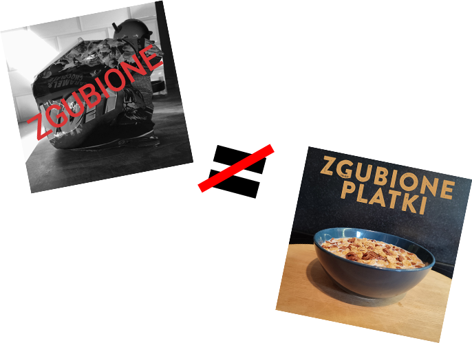
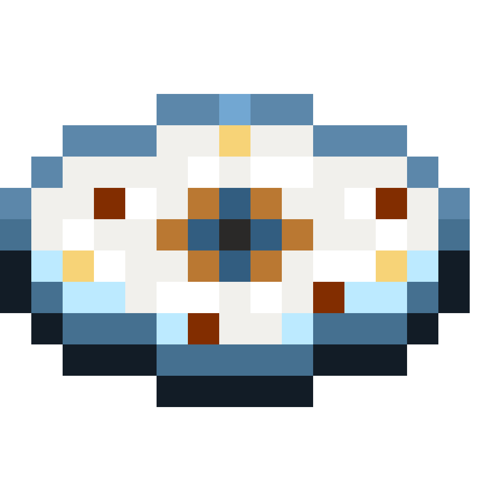
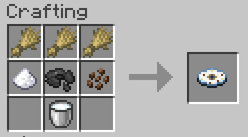

Od dłuższego czasu, w ramach rocznicowej EPki, na streamingach dostępna była wersja o dopisku “2016”. Lecz nie jest to prawdziwy oryginał, tylko lekki remix!

W związku z tym, pierwszy dzień zaczynamy symbolicznie - oryginalne
nagranie, wraz z oryginalną okładką, jest od teraz dostępne na samym
dole mojej dyskografii z rokiem wydania 2016!
Mieliście kiedyś ochotę zagrać ten legendarny utwór?
Od dzisiaj nuty do Zgubionych
Płatków z 2021 są dostępne online!
Wkrótce pojawią się też inne utwory*
DOSTĘPNE NA
* niedoceniłem trochę jakim koszmarem
jest transkrybcja utworów na nuty #ŚmierćMuseScorowi
#ŚmierćSongsterrowi #ŚmierćGuitarPro
Na 5 rocznice zrobiłem urodzinowego streama, po którym potem nie pozostało śladu. A cały ten czas VOD leżał u mnie na dysku! Więc w ramach tygodnia platków wrzucam highlighty z niego.
Przy okazji na dniach na streamingi wróci z powrótem EPka z piosenkami z tego streama - pierwszy raz, kiedy obydwie te piosenki były grane na żywo!
Na ostatnich kilku koncertach, właśnie z
okazji nadchodzącej rocznicy piosenki,
postanowiłem zagrać coś eksperymentalnego:
wersja orkiestralna na żywo!
Nagranie z koncertu jest dostępne już na
moim kanale na YT oraz jako wydanie
muzyczne na bandcampie! Wkrótce też ukaże
się na serwisach streamingowych

Z ogromną ekscytacją pragnę zaprezentować
wam oficjalne wydanie Zgubionych Płatków
w Minecrafcie! Możecie pobrać datapacka
(java edition) lub addona (bedrock) i
słuchać minecraftowego wykonania tego słynnego utworu!
jak dostać płytę:

Wielkie podziękowania dla
@piwniczanpotasu
za tę cudowną ikonkę:D